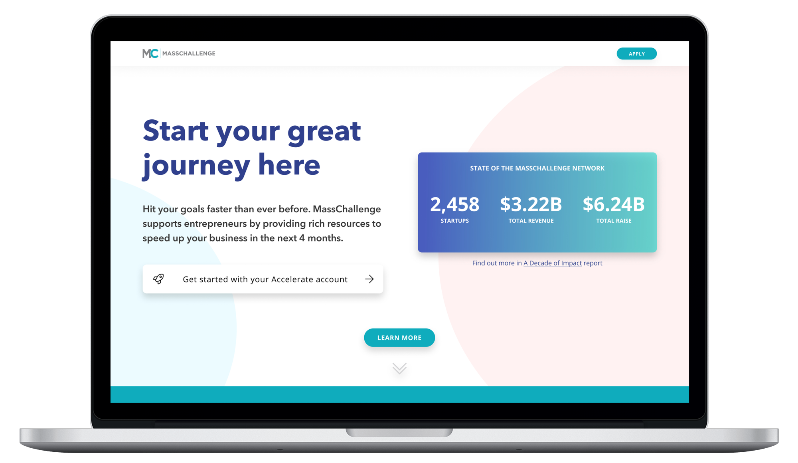
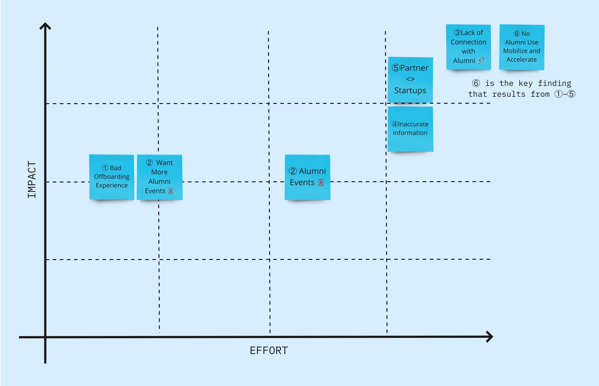
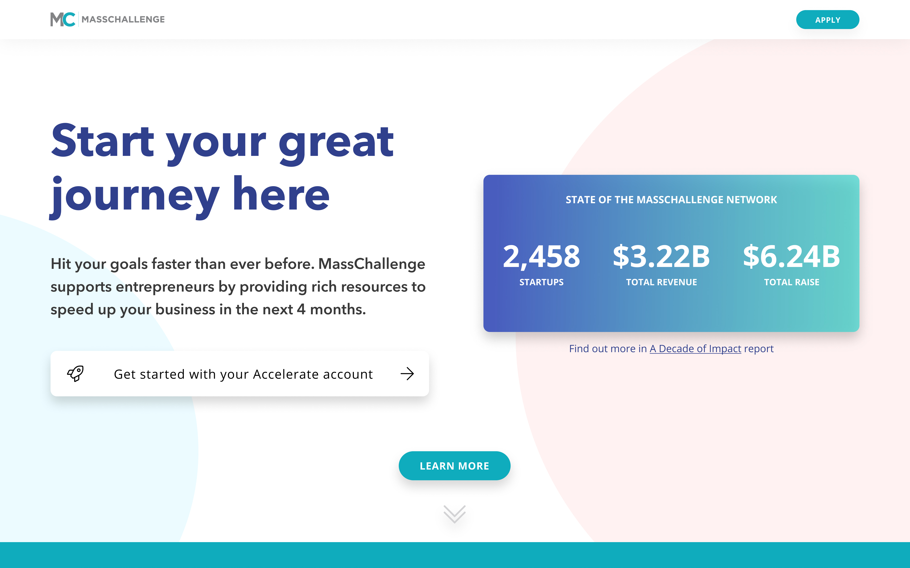
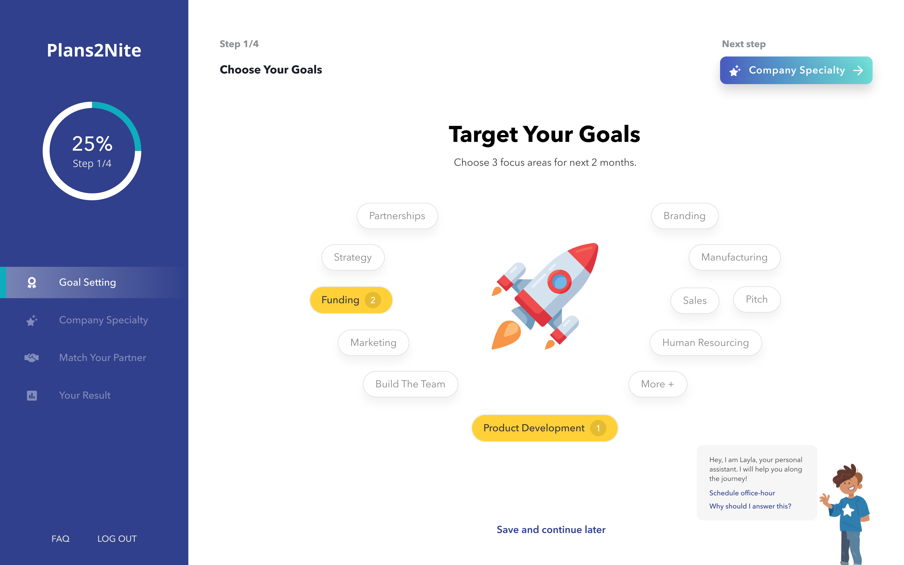
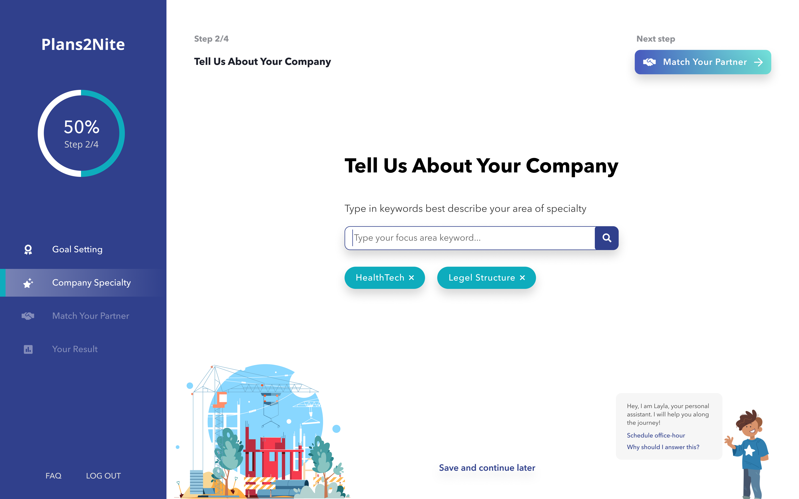

MassChallenge: Alumni Platform Redesign
Redesigned the post-program resource experience for 2,344+ startup alumni, reframing the problem from "increase engagement" to "provide value", which led senior leadership to sunset a $500K platform.

Asking for the Ball: The Reframe
"The brief said: increase alumni engagement. The real problem was: alumni had no reason to come back."
MassChallenge had 2,344 alumni across 8 programs in 4 countries. None of them were coming back. The initial brief was straightforward: design features to increase engagement.
I didn't believe the brief. After conducting stakeholder interviews and analyzing behavior data, I discovered a crucial difference between stated preference and observed behavior. Alumni said they wanted networking, but their behavior showed they only maintained profiles on platforms that gave them something back (like Crunchbase).
I requested a meeting with the Product Manager. I brought the data and proposed that we were solving the wrong problem: this wasn't an engagement problem. It was a value problem. I asked for trust to change direction entirely toward a resource-matching system. The PM agreed, and the brief was rewritten to follow the new design direction.
Research That Led to the Reframe
I set up 1:1 interviews with 5 stakeholders across 3 offices and conducted semi-structured interviews with 3 alumni. I also worked with the data team to analyze pre- and post-program survey responses.
Two findings made the reframe undeniable.
Finding 1: Alumni didn't know the platform existed
"What is Mobilize? I was never told about that platform."
The social platform built for alumni had near-zero adoption. This wasn't a discoverability problem; alumni simply had no reason to use it.
Finding 2: Taxonomy mismatch blocked connections
"There's a gap between the area MassChallenge called startups and what they call themselves."
Incorrect and outdated categorizations meant potential connections, between alumni, mentors, and partners, weren't happening.
The Struggle: Getting to Users
Recruiting alumni for interviews was harder than expected. For three weeks, almost no one responded to formal email invitations. Instead of waiting for perfect conditions, I changed my approach.
I started intercepting Alumni-in-Residence (AiRs) in the hallways for quick 20-minute sessions. I asked the Partnerships Coordinator for a specific list of top-engaging alumni and reached out to international program managers in Israel and Switzerland to make direct introductions. This pivot broke the silence and led to 10 high-signal interviews that formed the foundation of the reframe.
5 Insights That Drove the Design
Based on research across 5 stakeholders and 3 alumni, covering needs, behaviors, and constraints.
No Alumni Use the Platform
Mobilize was built for alumni networking. Most never logged in after graduating.
"What is Mobilize? I was never told about that platform."
Inaccurate Information
Mismatched taxonomy blocked connections between alumni, partners, and staff.
"There's a gap between what MassChallenge calls startups and what they call themselves."
Alumni Want Events
Alumni expressed strong interest in in-person meetups and activities hosted at MassChallenge.
"I'd bring my own food as long as MassChallenge provides the place."
Bad Off-Boarding
Most alumni had no contact with MassChallenge after the finale. No newsletter, no follow-up.
"I didn't get any newsletter from MassChallenge after the finale."
Partner Matching is Manual
The primary business income depends on good partner-startup matching. The process was entirely manual, limiting scale.
Key Solutions, Framed as Influence
Problem reframe led to a rewritten PM brief
After I presented research findings and the reframed problem statement, the PM updated the project brief from "improve alumni engagement" to "provide continued value to startups."
The design didn't follow a brief. The brief followed the design direction. This unlocked scope to build a matching system instead of iterating on the existing social platform.

Matching system: leadership sunset a $500K platform
The matching system design demonstrated that a curated, goal-driven resource experience could replace what Mobilize was theoretically supposed to do, except actually used.
Following stakeholder walkthroughs, senior leadership decided to sunset Mobilize entirely, achieving a budget reduction of approximately $500K.
This wasn't a deliverable. It was a business decision triggered by the design.



Engineering constraint: bypassing a taxonomy mismatch
MassChallenge categorized startups by its own taxonomy, but startups described themselves differently. This mismatch meant the data team couldn't make accurate matches. However, overhauling the database schema was an impossible engineering constraint within a 10-week cycle.
Instead of a backend rewrite, I designed a UX intervention: a free-form keyword input for company specialty. By letting startups self-describe and mapping those inputs to actionable tags, I gave the data team accurate signals without requiring any database restructuring.
Process, The Judgments
Lead with data, not new research
Pre- and post-program survey data already showed alumni weren't returning. Using existing data, rather than running new research, accelerated stakeholder alignment in the first meeting and kept the project moving within the 10-week constraint.
Impact-effort matrix to narrow scope
After sharing 5 insights with the team, I facilitated an impact-effort mapping session. This produced shared agreement on which problem to solve, and just as importantly, what not to build in Phase 1.
JTBD to align with business mission
"As an entrepreneur, I want access to curated resources so that I can achieve my company goal." Framing the design in JTBD terms connected user needs directly to MassChallenge's mission: making it easy for entrepreneurs to launch and grow.
First-time vs. recurring users
Due to time constraints, I focused the design on first-time user onboarding, a deliberate call to create a strong first-touch rather than spread effort across both flows. Recurring user experience was scoped to Phase 2.
Sprint Reality: Working with Engineering
Beyond the strategic platform redesign, I integrated directly into the engineering team's agile sprints to handle immediate UI needs and technical constraints.
I was assigned an active sprint ticket: redesigning the "Confirm Remove Team Member" flow. Working within the constraints of their existing Semantic UI component library, I designed a responsive modal supporting 5 distinct breakpoints (Regular, Small, Tiny, Mini, Mobile). I defined Header, Body, and Footer state variations so the engineering team could implement the feature against a spec, not a sketch.
If Not Me
Without the problem reframe, the project would have shipped re-engagement features on a platform alumni had already decided wasn't worth their time. Mobilize would have stayed. The $500K would have stayed. The mismatch would have stayed.
The matching system, the keyword input, and the scope decisions all trace back to the one judgment that mattered most: this is a value problem, not an engagement problem.
Outcomes
Mobilize was sunset, freeing approximately $500K of budget previously spent maintaining a low-adoption social platform. The matching system replaced it with a curated, goal-driven resource experience. 2,344+ alumni across 8 programs gained access to the open startup directory that had previously been restricted. Stakeholder walkthroughs returned positive feedback from Program Managers, the Data Manager, and the Managing Director, with 5 of 5 sessions endorsing the direction.
Lessons Learned
Reframing is a design skill
The most impactful thing I did in this project wasn't a screen. It was changing what question we were answering. Knowing when to push back on a brief and how to make the alternative case is a skill as important as the design itself.
Existing data moves faster than new research
In a 10-week internship, choosing to use pre-existing survey data instead of running new user studies let me move to the design phase weeks earlier. Knowing when you already have enough signal is its own judgment call.